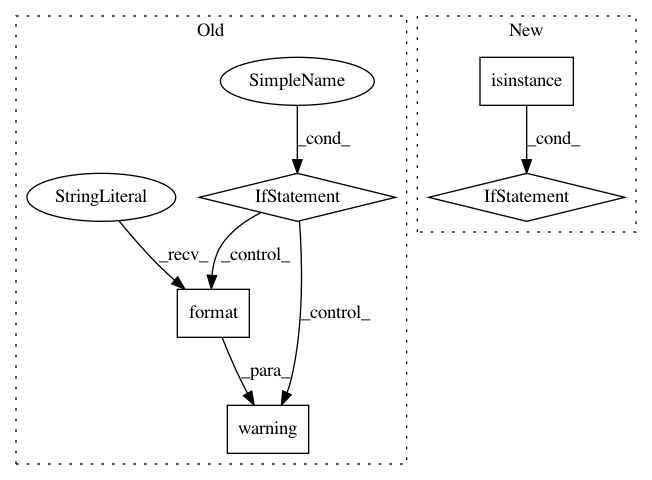

500d9c3d7bd1fac6cdc376100d52fca608d6a765,qiskit/aqua/algorithms/adaptive/vqe/vqe.py,VQE,_run,#VQE#,258
Before Change
Returns:
Dictionary of results
if not self._quantum_instance.is_statevector and self._operator_mode == "matrix":
logger.warning("Qasm simulation does not work on {} mode, changing "
"the operator_mode to "paulis"".format(self._operator_mode))
self._operator_mode = "paulis"
self._use_simulator_operator_mode = \
is_aer_statevector_backend(self._quantum_instance.backend) \
and self._operator_mode != "matrix"
After Change
self._aux_operators[i] = self._config_the_best_mode(self._aux_operators[i], self._quantum_instance.backend)
// sanity check
if isinstance(self._operator, MatrixOperator) and not self._quantum_instance.is_statevector:
raise AquaError("Non-statevector simulator can not work with `MatrixOperator`, either turn ON "
"auto_conversion or use the proper combination between operator and backend.")
self._use_simulator_operator_mode = \
is_aer_statevector_backend(self._quantum_instance.backend) \
and isinstance(self._operator, (WeightedPauliOperator, TPBGroupedWeightedPauliOperator))
In pattern: SUPERPATTERN
Frequency: 3
Non-data size: 5
Instances
Project Name: Qiskit/qiskit-aqua
Commit Name: 500d9c3d7bd1fac6cdc376100d52fca608d6a765
Time: 2019-07-17
Author: chenrich@us.ibm.com
File Name: qiskit/aqua/algorithms/adaptive/vqe/vqe.py
Class Name: VQE
Method Name: _run
Project Name: ray-project/ray
Commit Name: d4a5d09dab446fd9c962c80c87bc7a29f3d8b5cd
Time: 2020-07-10
Author: simon.mo@hey.com
File Name: python/ray/serve/http_proxy.py
Class Name: HTTPProxy
Method Name: __call__
Project Name: HazyResearch/fonduer
Commit Name: 4f75a1f7aba45eb4cb72841c6efcd3d3954a10cd
Time: 2018-07-18
Author: lwhsiao@stanford.edu
File Name: fonduer/parser/parser.py
Class Name: ParserUDF
Method Name: _parse_table